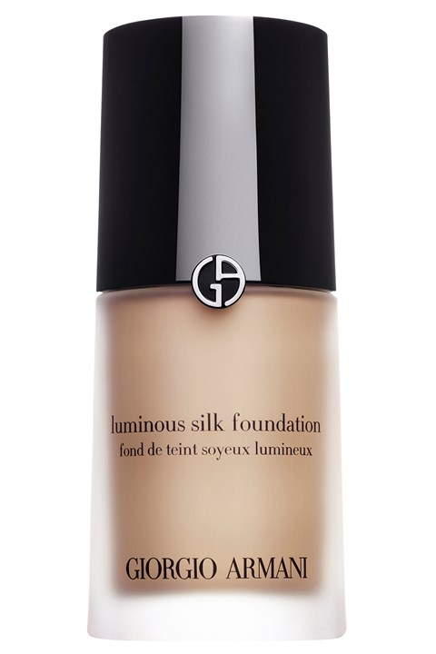

Lipstick

A tube of lipstick Lipstick is a cosmetic that applies color, texture, and protection to the lips. Many colors and types of lipstick exist. Some lipsticks are also lip balms, to add both color and hydration. Although the name originally applied to the baton (stick) of material within a tubular container usually around 10mm in diameter and 50mm in length, the term now generally relates to the material itself, regardless of method of application
Foundation
Foundation is a liquid or powder makeup applied to the face to create an even, uniform color to the complexion, cover flaws and, sometimes, to change the natural skin tone. Some foundations also function as a moisturizer, sunscreen, astringent or base layer for more complex cosmetics. Foundation applied to the body is generally referred to as "body painting" or "body makeup".
concealer
Concealer is one of the most important make-up products to have in your make-up bag. It not only conceals blemishes -it was also designed to create a base for the eye shadow. ... Concealer knocks out the discoloration around the eye area and the eyes look more awake and younger.
contour
What is the purpose of contour? The whole point of contouring is to enhance or change the shape of your face with makeup, but its effects don't have to be all that drastic. “From 2012 to 2018, contouring based on your face shape was seemingly very important,” says LA-based makeup artist Jenna Nicole.
Hghlighter

Highlighter is a type of cosmetic product that reflects light. Often used for contouring, it can be applied to the face or other parts of the body to brighten the skin on a given area, create the perception of depth and angles.